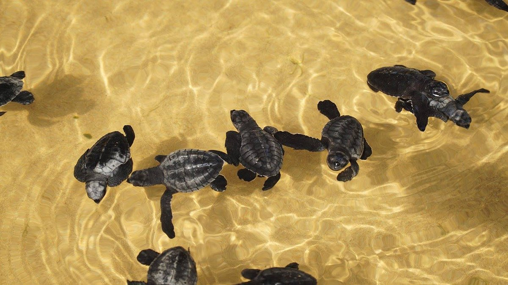
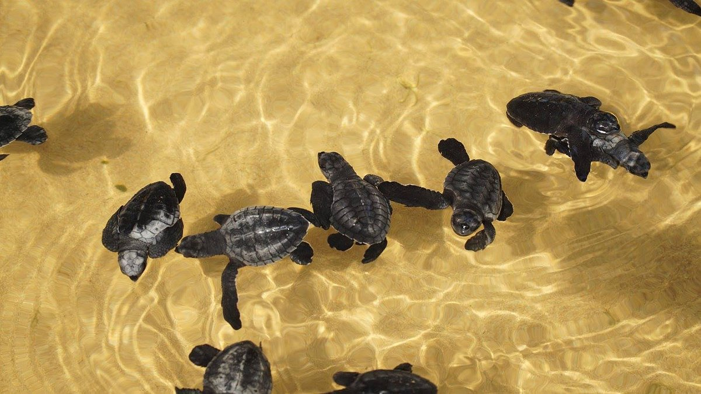

The Hikkaduwa Turtle Hatchery, located on Sri Lanka's southwest coast, is a well-known facility for the preservation of sea turtles. The Hawksbill and Green turtles, two species that are in danger of going extinct, depend on it greatly. It was launched in 1986. Through research, rehabilitation, and educational initiatives, the hatchery encourages turtle conservation while providing visitors with a personal interaction with these incredible creatures.
Gallery


.jpg)
.jpg) 


.jpg)
1. Guided Tour: Take a guided tour of the hatchery to learn about the conservation efforts, the different turtle species, and their life cycles. Knowledgeable staff will provide insights into the hatchery's work and answer any questions you may have.
2. Hatchling Release: Participate in or witness the release of baby turtles into the ocean. This incredible experience allows you to observe the hatchlings as they embark on their journey to the sea, contributing to their survival in the wild.
3. Adopt a Turtle: Support the conservation efforts by adopting a turtle. Many hatcheries offer adoption programs where you can symbolically adopt a turtle and contribute to its care, feeding, and release into the ocean. It's a meaningful way to support the hatchery's ongoing conservation work.
4. Educational Programs: Attend educational programs or presentations conducted by the hatchery's staff. These programs provide valuable information about turtle conservation, threats they face, and how individuals can contribute to their protection.
5. Volunteer Opportunities: Inquire about volunteer opportunities at the hatchery. Some hatcheries offer volunteering programs where you can actively participate in turtle conservation activities, such as nest monitoring, turtle rehabilitation, and hatchling care.
6. Photography: Capture unforgettable moments and the beauty of the turtles at the hatchery. With permission, you can take photographs of the turtles, hatchlings, and the overall hatchery environment.
7. Souvenir Shop: Visit the hatchery's souvenir shop, where you can find a range of turtle-themed items, including handicrafts, artwork, clothing, and accessories. Purchasing from the shop helps support the hatchery's conservation efforts.
8. Learn about Threats: Take the opportunity to learn about the threats faced by turtles, such as poaching and habitat loss. Understanding these challenges can inspire you to become an advocate for turtle conservation and raise awareness among others.